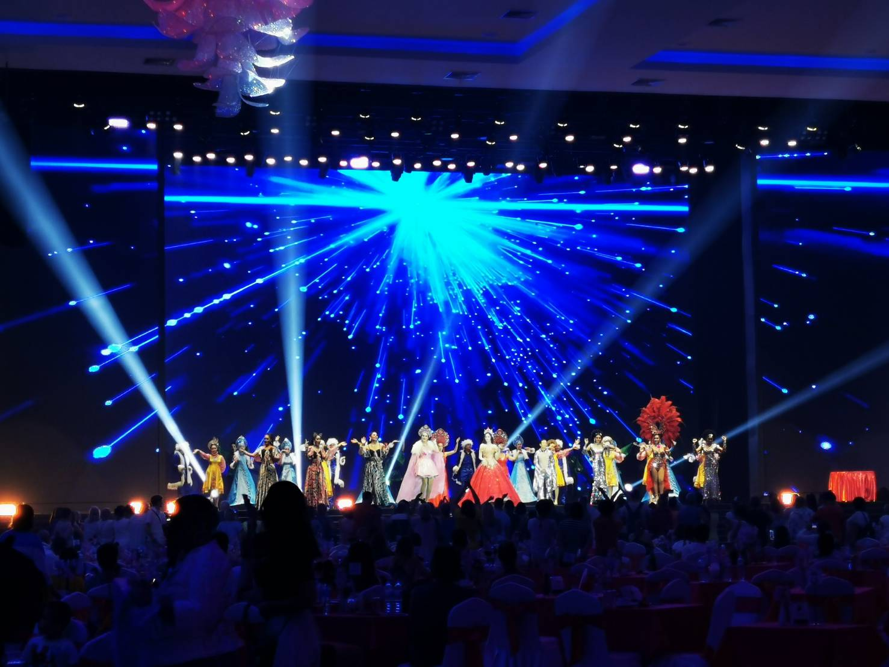

_01.png)
_02.png)
_04.png)
_05.png)
_06.png)
คิง เพาเวอร์ มหานคร

อัพเกรดประสบการณ์ชมวิวโดยขึ้นไปยังจุดชมวิวภายนอกอาคาร ณ ความสูง 310 เมตรที่ชั้น 78
ผ่านลิฟต์แก้วไฮโดรลิก เพลิดเพลินไปกับประสบการณ์บนพื้นกระจกลอยฟ้าและเดอะพีค ณ ความสูง 314 เมตร
เพื่อชมวิวจากจุดสูงสุดของคิง เพาเวอร์ มหานคร แบบ 360 องศา แล้วอย่าลืมลองแวะชิมเครื่องดื่มและของว่างที่รูฟท็อป
บาร์ที่สูงที่สุดในภูมิภาคเอเชียตะวันออกเฉียงใต้ มหานคร สกายวอล์ค จะไม่รับผิดชอบต่อค่าบัตรเข้าชม เนื่องจากสภาพอากาศที่เปลี่ยนแปลงซึ่งส่งผลต่อทัศนวิสัย แต่ผู้เข้าชมสามารถร้องขอการออกบัตรเข้าชมใหม่ สำหรับการเข้าชมในครั้งหน้า
มหานคร สกายวอล์ค
.jpg)
พบกับประสบการณ์บนพื้นกระจกลอยฟ้า ณ ความสูง 310 เมตร จากชั้น 78 เหมาะสำหรับผู้ชื่นชอบความตื่นเต้นเร้าใจ
พร้อมถ่ายภาพเมื่อยืนอยู่บนพื้นกระจกลอยฟ้าเหนือกรุงเทพฯ และวิวจากมุมสูงของเส้นขอบฟ้า ผู้เข้าชมต้องสวมถุงหุ้มรองเท้าและเก็บสิ่งของที่อาจก่อให้เกิดความเสียหายบนพืนกระจกได้
เช่น โทรศัพท์มือถือ
พวงกุญแจหรืออื่นๆ ท่านสามารถถ่ายภาพบนพื้นกระจกลอยฟ้าได้จากจุดถ่ายภาพที่กำหนดเท่านั้น
คาบาเร่ โชว์
์
“คาบาเร่ย์โชว์” ความสนุกสนาน ไร้พรมแดนแบบหลุดโลกที่พร้อมให้ทุกท่านมีความสุขกับการดูโชว์ด้วยความตื่นเต้นสุดแสนอลังการ
โดยสวนนงนุชพัทยา ได้ทำการรวมทีมงานนักแสดงคาบาเร่ย์โชว์ มืออาชีพ กว่า 30 ชีวิต เพื่อสร้างความบันเทิงในรูปแบบพิเศษ เตรียมพร้อมเพื่องานอีเว้นท์ต่างๆ โดยเฉพาะกรุ๊ปทัวร์ที่จองมาเป็นกรณีพิเศษ เช่น งานเลี้ยงสังสรรค์ งานแต่งงาน งานกาล่าดินเนอร์ งานเปิดงาน งานการประกวดและงานอื่นๆ ตามที่ลูกค้าต้องการ
เช่นเปิดทำการแสดงเป็นประจำสำหรับลูกค้าชาวจีน และ อินเดีย ที่จองมารับประทานอาหารกลางวันและเย็นที่ห้องอาหารสวนลอยฟ้า และ ห้องอาหารอินเดีย
กดตรงนี้เพื่อกลับขึ้นข้างบน คลิก
_09.png)